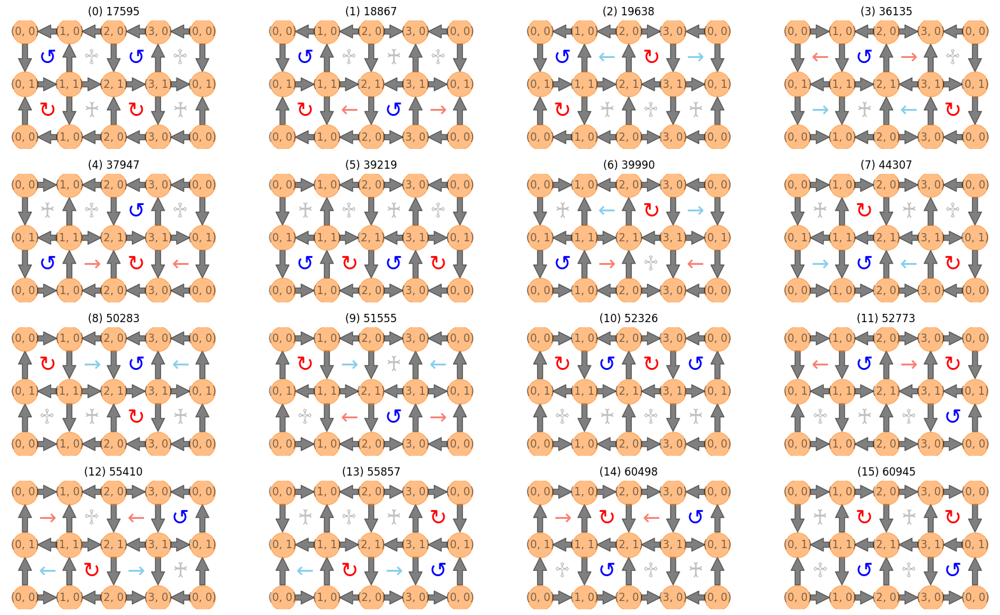

Welcome to qlinks’s documentation!#
qlinks: Quantum link model#


Quantum link model
Installation#
1. Install the package from PyPI:#
pip install qlinks
2. Install the package from source:#
poetry install --all-extras
3. Docker#
docker pull tanlin2013/qlinks:main
Getting started#
1. Enumeration of the Basis#

We implement the depth-first search (backtracking) algorithm to enumerate all basis satisfying the Gauss law.
from qlinks.symmetry.gauss_law import GaussLaw
lattice_shape = (4, 2)
gauss_law = GaussLaw.from_staggered_charge_distri(*lattice_shape, flux_sector=(0, 0))
basis = gauss_law.solve()
2. Easy construction of the Hamiltonian#
from qlinks.model.quantum_link_model import QuantumLinkModel
coup_j, coup_rk = (1.0, 1.0)
model = QuantumLinkModel(coup_j, coup_rk, lattice_shape, basis)
ham = model.hamiltonian.todense()
The Hamiltonian is a scipy sparse matrix, but we can convert it to a dense matrix for small systems.
License#
© Tan Tao-Lin, 2023. Licensed under a MIT license.